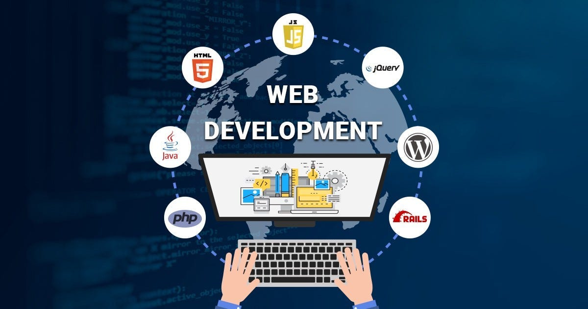

Noutățile noastre
Am lansat noua versiune a mini-site-ului educațional, structurat pe pagini modulare și ușor de navigat.
Toate resursele și legăturile au fost actualizate pentru o performanță optimă în browser.
Dezvoltare Web Modernă: Creăm interfețe web optimizate, folosind cele mai noi standarde HTML5 și CSS3.
Găzduire și Publicare: Asigurăm pregătirea proiectelor pentru publicarea pe platforme de găzduire statică precum GitHub Pages.

Am lansat noua versiune a mini-site-ului educațional, structurat pe pagini modulare și ușor de navigat.
Toate resursele și legăturile au fost actualizate pentru o performanță optimă în browser.